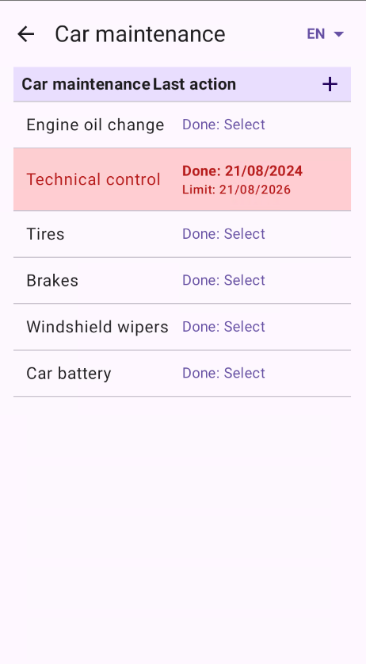
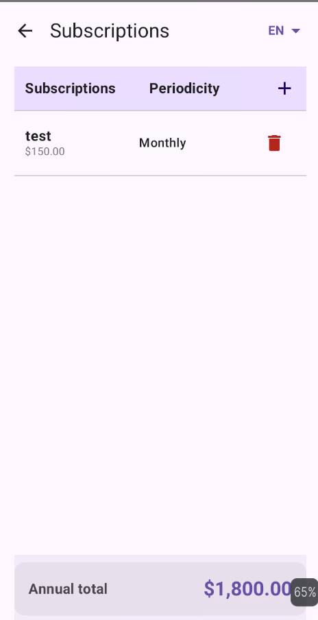

Abenly
Abenly — suivi des entretiens véhicule et abonnements sur Android.
Application moderne et privée pour gérer l’historique de maintenance et les dépenses récurrentes, 100% hors‑ligne.
Téléchargements directs
Captures d’écran

